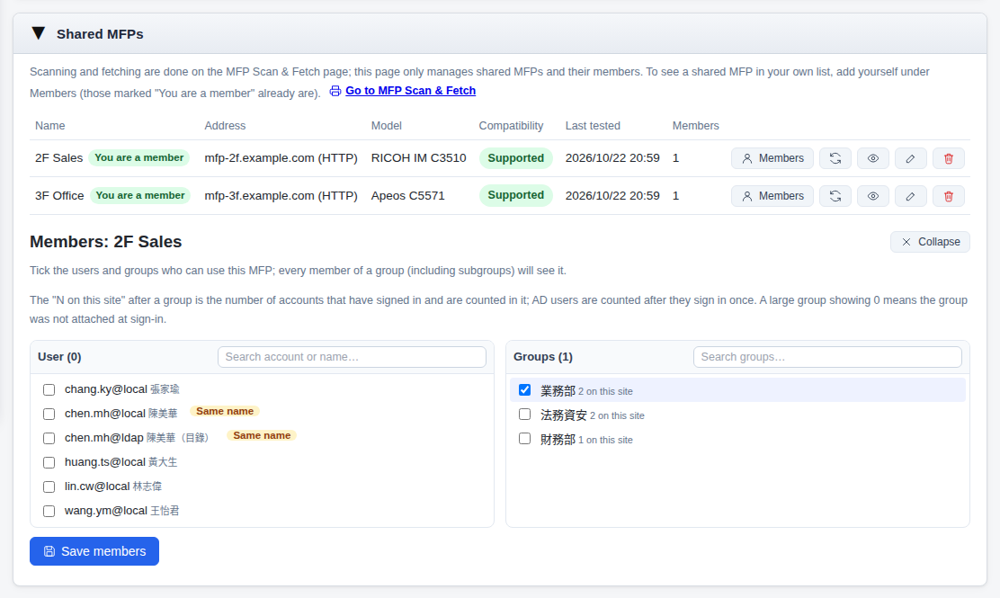
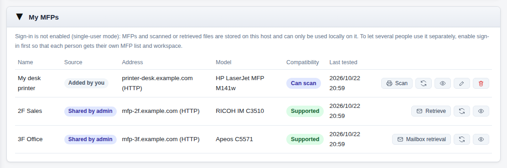
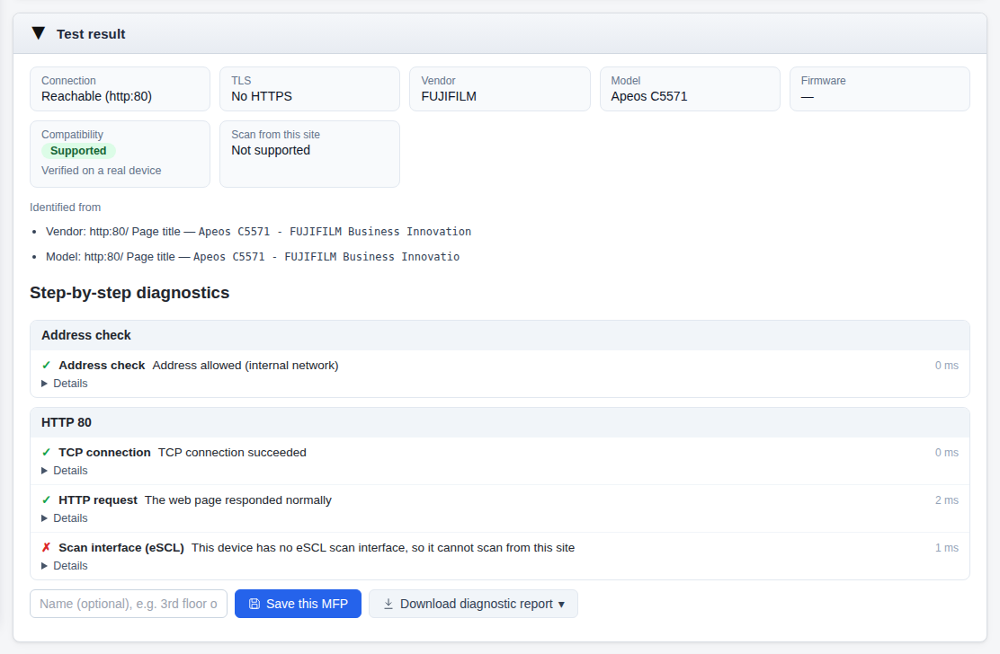
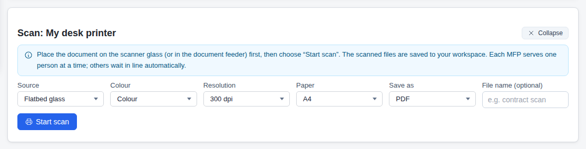
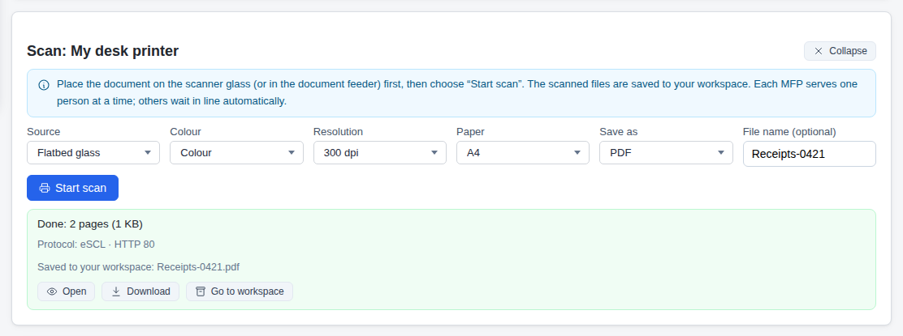
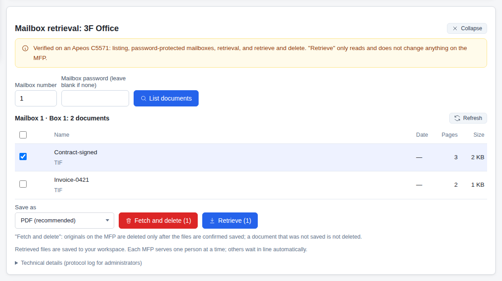
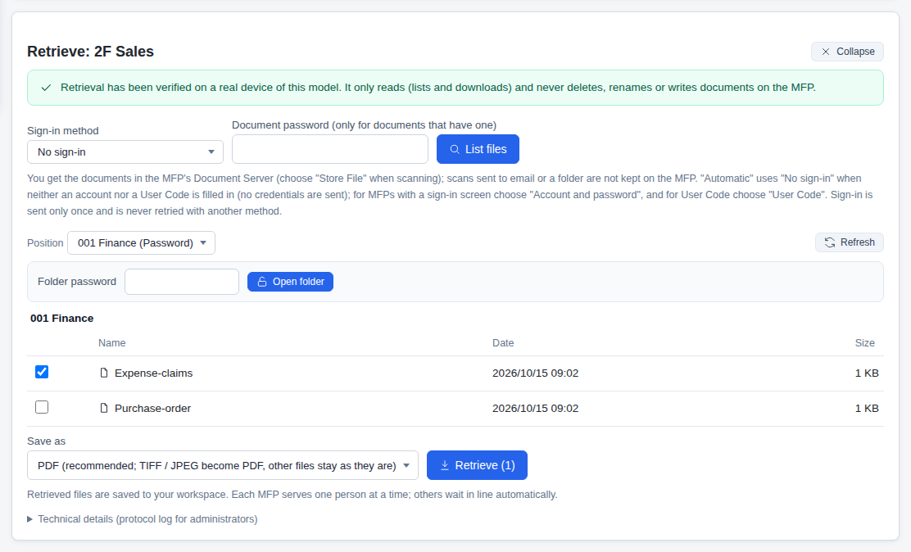
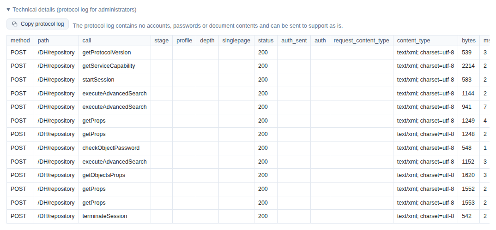

MFP Scan & Fetch
With sign-in enabled, each person has a separate MFP list and workspace. If this system runs as a server for several people without sign-in, everyone shares one workspace and anyone who can reach the site can see the scanned and retrieved files, so documents containing confidential or personal data are effectively exposed. If you use it alone on your own computer, see the single-user guide.
There are three common ways to get a scanned document to yourself, and each has its problems:
Every MFP needs its own mail server and sender account, which is tedious to maintain, and large documents often exceed the attachment or mailbox size limit and never arrive.
Many people usually have access to a shared folder, so anyone can open or take a confidential document such as a contract or HR record left there.
Flash drives are easy to lose and can bring in malware, and many organisations restrict them in their security policies.
MFP Scan & Fetch: start a scan on the MFP from this site, or retrieve documents stored on the MFP. Files go only into your own workspace, ready for OCR, merging, compression or translation.
How it works
The MFP, this site and your workspace are on the same internal network; files go from the MFP straight into your workspace without passing through any cloud service.
- Set up shared MFPs and choose who can use them under Members (users, groups, organisational units)
- Decide whether users may add an MFP themselves by entering its IP address (on by default; turn it off and everyone uses the shared ones)
- Use the step-by-step diagnostics and the diagnostic report to find out why a device cannot be reached
- See the MFPs you added and those shared by an administrator on the MFP Scan & Fetch page
- If the administrator allows it, add an MFP yourself by entering its IP address; only your account sees it
- Press Scan to start a scan from this site, or Retrieve to fetch documents stored on the MFP
- Retrieved files are in your workspace, ready to open, download or use with other tools
Administrators: set up shared MFPs
Create it once under Settings → Shared MFPs and choose the members; they then see and use it on their own MFP Scan & Fetch page.
- 1
Enter the address and test
Enter the MFP's IP address or host name and press Connection test. It only reads the home page and the scan interface's capabilities, and sends no credentials.
- 2
Check the model and save
Check the brand, model and compatibility, then press Save as a shared MFP.
- 3
Choose members
Press Members and tick users or groups. "N on this site" next to a group is the number of accounts already counted in it.
- 4
Add yourself too
Administrators must also be members for the device to appear on their own MFP Scan & Fetch page (marked "You are a member").

account@source, accounts with the same name are marked, and each group shows how many accounts it has on this site.To have everyone use only shared MFPs, turn off "Allow users to add their own MFPs" under Usage settings on the same page. Administrators are not affected.
Users: My MFPs
The list has the MFPs you added (visible only to your account) and those shared by an administrator; compatibility and the available actions are on the same row.

- 1
Add your own MFP
Enter the address under Add an MFP and press Connection test.
- 2
Check the result
Brand, model, compatibility, whether it can scan from this site, and the diagnostics for every step.
- 3
Save
Give it a recognisable name and press Save this MFP; it is still there when you sign in with the same account on another computer.

Scan from this site
MFPs that support eSCL have a Scan button: choose the settings here, the MFP starts scanning and the result goes straight into your workspace.
- 1
Place the document
Put the document on the flatbed glass or in the document feeder.
- 2
Choose settings
Press Scan and choose the source, colour, resolution, paper and PDF or JPEG; you can name the file first.
- 3
Start scan
Press Start scan. If someone else is using the device you queue automatically, and the page shows how many are ahead of you.
- 4
Saved to your workspace
When it finishes you can open it, download it or continue in your workspace.


Retrieve documents stored on the MFP
First store the document in a mailbox, the Document Server or a box on the MFP's panel, then press Retrieve here (Mailbox retrieval on FUJIFILM).
- 1
Store it on the MFP
On the panel, store it in a mailbox, the Document Server or a box depending on the brand (see Brands below).
- 2
Enter sign-in details
Enter the mailbox number, account or User Code as the panel requires. They are sent once; if they are wrong it stops there.
- 3
List and choose a location
Press List files; switch folders under Position, and for a password-protected folder enter the password and press Open folder.
- 4
Tick and retrieve
Tick the documents you want, choose PDF (recommended) and press Retrieve; the files are saved to your workspace.



Retrieval by brand
"Supported" models have passed retrieval on a real device; "Experimental" ones are based on the vendor's manuals or analysis of vendor tools and have not been verified on a real device yet.
| Brand | Method | How to store it on the MFP | What to enter | Status |
|---|---|---|---|---|
| FUJIFILM | Mailbox | Choose Scan to Mailbox on the panel and store it in the mailbox | Mailbox number; the password only if the mailbox has one | Supported: Apeos C5571 (same series C7071, C6571, C4571, C3571, C3071, C2571). Fetch and delete available |
| RICOH | Document Server | Choose Scan to Folder with Store File on the panel, into the Document Server's shared folder or a device folder | Sign-in method (no sign-in, account and password, or User Code); the folder password only if set | Supported: IM C2000, IM C2010, IM C2510, IM C3500, IM C3510; other models are experimental |
| KYOCERA | Document box | Store it in a custom box (the model needs a hard disk or SSD) | The MFP account and password; the box password only if set | Experimental. On models without custom boxes, the polling box can only be listed for now |
| Canon | Advanced Box | Store it in the Advanced Box shared or personal space | The MFP account and password | Experimental (WebDAV or SMB) |
| Konica Minolta | Public user box | Store it in a public user box | The box account and password | Experimental (SMB) |
| SHARP | NAS folder | Store it in the MFP's NAS folder | The MFP account and password | Experimental (SMB) |
| eSCL-capable models | Scan from this site | Nothing to store first; press Scan on this site | No credentials needed | Can scan (HP, Epson, Brother and other eSCL-capable models) |
Security and privacy
MFPs often hold contracts and payslips, so every step takes the most conservative approach.
MFP addresses must be on the internal network; the connection test only reads the home page and the scan interface's capabilities and sends no credentials.
Credentials entered for a retrieval are used for that retrieval only; what is remembered (mailbox number, trusted certificate and so on) is stored with your account and never includes passwords.
A wrong account, mailbox or folder password stops there with no retry using another method, so repeated failures do not get the account locked on the MFP.
Retrieval only lists and downloads, never deletes or renames; only FUJIFILM offers Fetch and delete, which deletes only after the files are confirmed saved.
Each MFP serves one person at a time; others queue automatically and nobody interrupts anyone.
Who scanned or retrieved what on which device, and which originals were deleted, goes into the audit log (no passwords or document contents).
FAQ
If something still goes wrong, start here.
Using it without sign-in (single-user)
Single-user mode is only suitable for one person on their own computer, with the service listening only on this computer (127.0.0.1). For the steps and precautions, see the single-user guide.
I cannot see an MFP shared by the administrator
Check "Signed in as" on the page: one person's AD, SSO and local accounts are different accounts, and the member must be the one you actually sign in with. The administrator can also add a group you belong to; "0 on this site" next to a group means it was not attached at sign-in. Switching back to the tab refreshes the list.
Who is affected when an MFP is deleted
One you added yourself (source: Added by you) is visible only to you, so deleting it affects nobody, and a shared MFP for the same device keeps working. A shared MFP (source: Shared by admin) can only be deleted by an administrator under Settings → Shared MFPs; once deleted, no member can see or use it. In both cases the scan and retrieval history for that MFP is kept and marked as Removed.
The connection test fails or files cannot be listed
Follow the connection test's step-by-step diagnostics from the step that failed, or download the diagnostic report (txt, md, json, html, pdf) for the administrator. KYOCERA needs the document service enabled on port 9091 or 9090; if a FUJIFILM port returns 406, choose the other connection method.
A RICOH folder needs a password
Choose the folder under Position, enter the folder password and press Open folder. A wrong password is not retried automatically; check it and enter it again.
The list says "Retest suggested"
The identification rules have changed since this device was tested without being identified. Press Test again to use the new rules.
Where are the retrieved files?
In your workspace: open or download them, or pick them directly in other tools. The retention period is set by the administrator (24 hours by default).
Reporting a problem
Open Technical details and press Copy protocol log to send it to support. The protocol log contains no accounts, passwords or document contents.
To call it from your own programs, see the API manual.